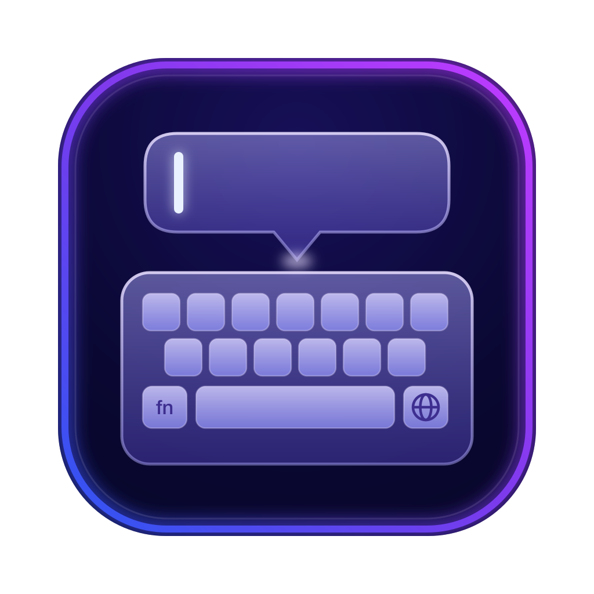
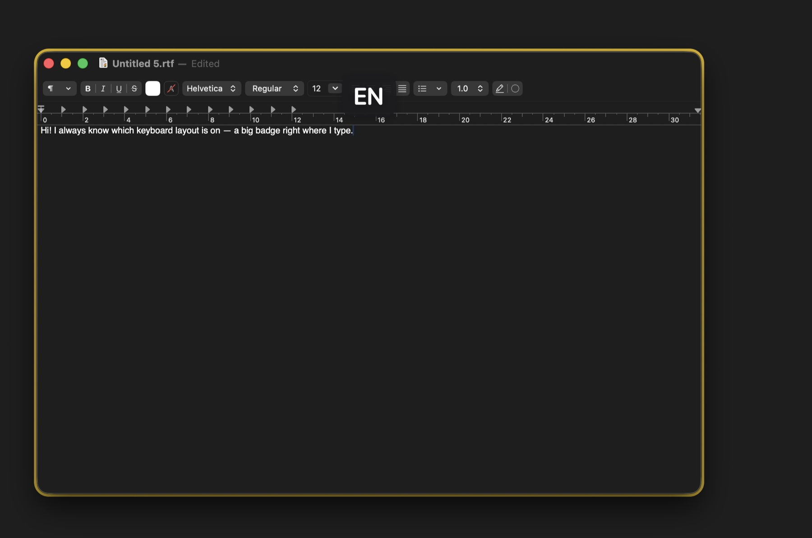

Always know your keyboard layout — a big, clear indicator right where you type.
For macOS 14 or later

A big badge with the current layout appears next to the text field you are typing in — no more squinting at the menu bar
Size, font, text and background colors, opacity and corner radius — tune the badge to your taste
Give every language its own color and recognize the layout with peripheral vision, before reading a letter
Let the badge follow the active field, or pin it to any spot on the screen
The badge shows up while a text field is focused and disappears the moment you leave it
English, Russian, Spanish and Simplified Chinese interface, right from the first version
You can revoke the permission at any time in System Settings — the badge will simply stop appearing until access is granted again. Details in the Privacy Policy.